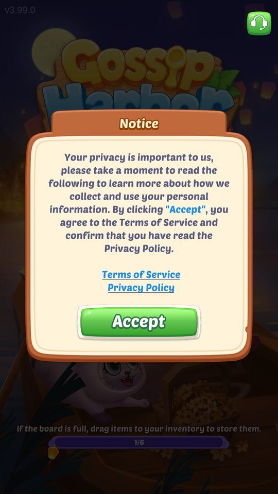
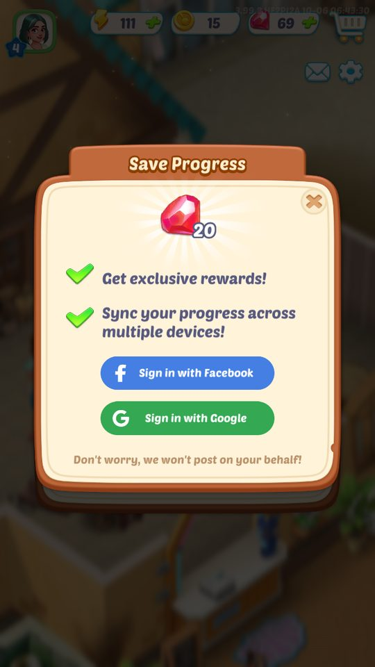
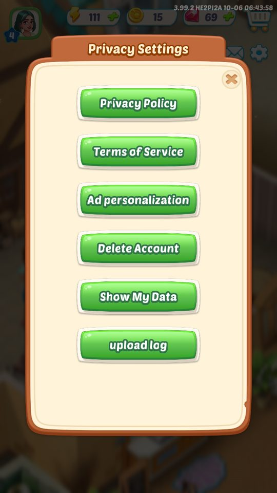
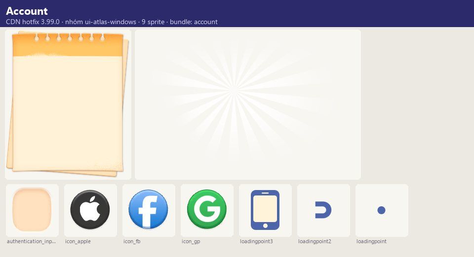
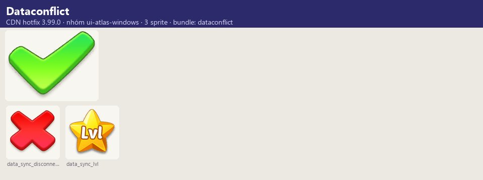

Ảnh chụp & tài nguyên
Tài khoản dựa trên SSO của Microfun: lần đầu, client gửi AccountBindReq gồm nhiều định danh thiết bị (deviceId = md5(Android ID), vendorId, openUDID,…
Mô tả
- Tài khoản dựa trên SSO của Microfun: lần đầu, client gửi AccountBindReq gồm nhiều định danh thiết bị (deviceId = md5(Android ID), vendorId, openUDID, installationId, idfa/adid (GAID), imei/oaid/imsi, MAC), currentUserId, firstOpenTime và (nếu có) thông tin mạng xã hội; server trả AccountBindResp với mainUserId/devUserId/extraUserId và trạng thái đăng ký.
- Người chơi có thể liên kết Facebook, Google (Play Games) hoặc Apple để đồng bộ tiến trình đa thiết bị; xung đột dữ liệu được hỏi Local/Cloud kèm so sánh gem, coin, level, ngày/nhiệm vụ cốt truyện.
- Có thông báo khi tài khoản đăng nhập ở thiết bị khác, nhắc khôi phục tiến trình cho người chơi cũ, cài đặt quyền riêng tư (xóa tài khoản, cá nhân hóa quảng cáo, xem dữ liệu, quyền danh sách ứng dụng, tải log) và xác minh tuổi/chống nghiện (bản CN).
Còn thiếu / chưa xác minh
Mở khóa & điểm vào
SSO chạy ở LoadingStage 'sso' mỗi lần vào game; liên kết xã hội trong Settings → Sign In.
Điểm vào:
- Loading (tự động)
- Settings → SignInWindow / SignOutWindow
- Popup 'Login reminder' (account_restore_*)
- Settings → Privacy
Cách hoạt động
- LoadingStage: privacyPolicy (PrivacyConfirmWindow nếu chưa đồng ý; xem PolicyConfirmTime/PolicyPublishTime) → sso: ApplicationManager.SSO gọi InitializeRequestManager.SSORegister với AccountBindReq → nhận AccountBindResp → 'UserModel UserId changed to <id>' → login: GameModel:Login (tải dữ liệu người chơi, so syncTime).
- Đồng thời GooglePgsClient.CheckAuth (log 'CheckAuthenticated success:<playerId>') và GetAchievements.
- Liên kết: SignInWindow → LoginClient.Login(param) / FacebookManager → LoginEventArgs (UserId, AccessToken, Name, Email, AuthCode, Picture) → gửi socialId/socialType/token lên SSO → game khởi động lại (log 'SDKHelper:OnLoginCallback', 'RestartGame').
- Nếu tài khoản xã hội đã gắn tiến trình khác: Progress Conflict (Use Local / Use Cloud) có xác nhận.
- Đăng nhập nơi khác: 'Signed Out' (Re-login / Quit).
- Đổi liên kết: bind_switch_*.
- Phiên bản cũ: login_fail_ver_desc yêu cầu cập nhật.
Luồng chi tiết theo code
LoadingStage: privacyPolicy (PrivacyConfirmWindow nếu chưa đồng ý; xem PolicyConfirmTime/PolicyPublishTime) → sso: ApplicationManager.SSO gọi InitializeRequestManager.SSORegister với AccountBindReq → nhận AccountBindResp → 'UserModel UserId changed to <id>' → login: GameModel:Login (tải dữ liệu người chơi, so syncTime). Đồng thời GooglePgsClient.CheckAuth (log 'CheckAuthenticated success:<playerId>') và GetAchievements. Liên kết: SignInWindow → LoginClient.Login(param) / FacebookManager → LoginEventArgs (UserId, AccessToken, Name, Email, AuthCode, Picture) → gửi socialId/socialType/token lên SSO → game khởi động lại (log 'SDKHelper:OnLoginCallback', 'RestartGame'). Nếu tài khoản xã hội đã gắn tiến trình khác: Progress Conflict (Use Local / Use Cloud) có xác nhận. Đăng nhập nơi khác: 'Signed Out' (Re-login / Quit). Đổi liên kết: bind_switch_*. Phiên bản cũ: login_fail_ver_desc yêu cầu cập nhật.
Ảnh chụp & tài nguyên (7)
3 ảnh chụp trong game (BlueStacks/LDPlayer, tài khoản cấp 4); 2 ảnh tài nguyên trong APK; 2 bảng sprite trích từ bundle sự kiện trên CDN hotfix 3.99.0 (mỗi bảng là một chủ đề/biến thể; sprite rời, không phải màn hình đã dựng). Bấm ảnh để phóng to; nhãn UC dẫn tới use case tương ứng.











Use case (9)
Bấm vào từng use case để mở. Mở/đóng tất cả
UC-01 SSO lần đầu
Các bước- Thu thập định danh (GetRegisterReqData, GetDeviceId)
- SSORegister(AccountBindReq)
- AccountBindResp → userId
| Actor | System |
|---|---|
| Trigger | LoadingStage sso |
| Điều kiện | — |
| Kết quả | Có userId (vd. 146699106) |
| Quy tắc / số liệu | DeviceID = md5(Android ID) (đã kiểm chứng trên LDPlayer & BlueStacks); server không ghép chỉ theo DeviceID — idfa/định danh lưu sẵn cũng được dùng (thực nghiệm đổi Android ID vẫn trả userId cũ) |
| Evidence | InitializeRequestManager.SSORegister/GetRegisterReqData/GetDeviceId; Oper_sso.AccountBindReq/Resp; log 'SSO idfa is …', 'DeviceID:…', 'UserModel UserId changed to …'; PlayerPrefs SsoRegisterIdfa, UUIDForCSharp, UserIdForCSharp |
UC-02 Đồng ý chính sách
Các bước- PrivacyConfirmWindow → Accept
- Upload thời điểm đồng ý
| Actor | Player |
|---|---|
| Trigger | Lần đầu / văn bản cập nhật |
| Điều kiện | — |
| Kết quả | Tiếp tục tải |
| Quy tắc / số liệu | So PolicyPublishTime với PolicyConfirmTime; bản CN dùng PrivacyConfirmWindowCN |
| Evidence | log Info_Policy 同意协议/上报协议同意信息成功; PlayerPrefs PrivacyPolicyAccepted, PolicyConfirmTime, PolicyUploadTime, PolicyPublishTime |
UC-03 Liên kết Google/Facebook/Apple
Các bước- Chọn nền tảng
- LoginClient.Login / FacebookManager
- Thành công → game khởi động lại
| Actor | Player |
|---|---|
| Trigger | Settings → Sign In |
| Điều kiện | — |
| Kết quả | Tiến trình gắn với tài khoản xã hội |
| Quy tắc / số liệu | Thất bại: 'Sign in failed! Try Again' |
| Evidence | text sign_in_*; OneSDK.LoginClient, LoginEventArgs; log BlueStacks 'SDKHelper:OnLoginCallback', 'RestartGame:11' |
UC-04 Xung đột tiến trình
Các bước- Progress Conflict hiển thị Gems/Coins/Level/Story (Day {0} Task {1}) hai bên
- Use Local / Use Cloud
- Xác nhận
| Actor | Player |
|---|---|
| Trigger | Tài khoản xã hội đã có tiến trình khác |
| Điều kiện | — |
| Kết quả | Chọn một bộ dữ liệu |
| Quy tắc / số liệu | Data Conflict tương tự giữa local và cloud |
| Evidence | text progress_conflict_*, data_conflict_*; prefab DataConflictWindow, RecoverProgressConfirmWindow |
UC-05 Đăng nhập ở thiết bị khác
Các bước- 'Signed Out' — tài khoản dùng ở thiết bị khác
- Re-login / Quit Game
| Actor | System |
|---|---|
| Trigger | Server báo |
| Điều kiện | — |
| Kết quả | Ngắt phiên cũ |
| Quy tắc / số liệu | Thông điệp riêng Facebook/Google/Apple |
| Evidence | text login_conflict_*, login_disconnect_* |
UC-06 Khôi phục cho người chơi cũ
Các bước- 'Yes, I've played' / 'No, I haven't'
- Đăng nhập tài khoản đã gắn trên thiết bị mới
| Actor | Player |
|---|---|
| Trigger | Login reminder |
| Điều kiện | — |
| Kết quả | Đồng bộ tiến trình |
| Quy tắc / số liệu | Tài khoản chưa gắn tiến trình: hướng dẫn gắn trên thiết bị cũ trước |
| Evidence | text account_restore_* |
UC-07 Quyền riêng tư
Các bước- Delete Account / Ad personalization / Show My Data / App List Permissions / upload log
| Actor | Player |
|---|---|
| Trigger | Settings → Privacy |
| Điều kiện | — |
| Kết quả | Thực thi quyền dữ liệu |
| Quy tắc / số liệu | — |
| Evidence | text privacy_setting_*; prefab PrivacySettingWindow, PrivacyPolicyWindow, UserAgreementWindow |
UC-08 Xác minh tuổi / bảo vệ trẻ em
Các bước- Age Verification qua trình duyệt
- Thành công/thất bại
| Actor | Player |
|---|---|
| Trigger | Thiếu thông tin tuổi / vùng yêu cầu |
| Điều kiện | — |
| Kết quả | Cho phép chơi / chặn |
| Quy tắc / số liệu | ChildProtection*, RealAuthWindow, StrictCertWindow (bản CN) |
| Evidence | text kid_*, ageVerify_*, Age_Verify_*; prefab AgeWindow, ChildPrivacyWindow, ChildProtection*, RealAuthWindow |
UC-09 Play Games
Các bước- CheckAuth
- GetAchievements
- Unlock/IncreaseAchievement khi đạt
- RecordGameEvent
| Actor | System |
|---|---|
| Trigger | Khởi động |
| Điều kiện | Có GMS |
| Kết quả | Thành tựu Play Games |
| Quy tắc / số liệu | Trên LDPlayer: GoogleApiManager DEVELOPER_ERROR nhưng CheckAuth vẫn trả playerId |
| Evidence | OneSDK.GooglePgsClient.Init/CheckAuth/Login/GetAchievements/UnlockAchievement/IncreaseAchievement/ShowAchievementsUI/RecordGameEvent; log [GooglePgsManager] |
Cấu hình (4)
Gộp mọi nguồn: const trong code, JSON mặc định trong Resources, bảng static, storage key, AB test, cờ server.
| Nguồn | Key | Kiểu | Giá trị | Ý nghĩa | Nơi định nghĩa |
|---|---|---|---|---|---|
| config class | AccountBindReq | fields | game_token, deviceId, vendorId, openUDID, installationId, idfa, adid, imei, oaid, imsi, imei_meid, wifiMAC, bluetoothMAC, currentUserId, action_type, firstOpenTime, socialId, socialType, social_name, social_icon, social_appid, social_openid, social_access_token, social_refresh_token, social_email, … | Payload SSO | dump.cs Oper_sso.AccountBindReq |
| config class | AccountBindResp | fields | registrationStatus, mainUserId, devUserId, extraUserId, first_bind, service_time, social_infos[], extra_social_info, user_infos[], reg_extappid, reg_version, reg_channel | Kết quả SSO | dump.cs Oper_sso.AccountBindResp |
| storage key | UserIdForCSharp, UUIDForCSharp, SsoRegisterIdfa, FirstOpenTime, InstallRegion, PrivacyPolicyAccepted, PolicyConfirmTime, PolicyPublishTime, PolicyUploadTime | PlayerPrefs | — | Định danh & chính sách | playerprefs.v2.xml |
| runtime (ảnh chụp BlueStacks 06/10/2026) | Thưởng liên kết | 20 gem (Save Progress: Facebook / Google) | screens/manifest.json |
Backend / server
| Command | Chiều | Mục đích |
|---|---|---|
SSORegister (AccountBindReq/Resp) | client→server | Đăng ký/đăng nhập, gắn mạng xã hội |
GameModel:Login / SyncModel | client↔server | Tải & đồng bộ dữ liệu người chơi |
Giao diện (UI)
| Element | Class | Mục đích |
|---|---|---|
| Đăng nhập | SignInWindow, SignOutWindow, NewBindNoticeWindow | |
| Xung đột | DataConflictWindow, RecoverProgressConfirmWindow | |
| Quyền riêng tư | PrivacyConfirmWindow(CN), PrivacyPolicyWindow, PrivacySettingWindow, UserAgreementWindow |
Storage keys
UserIdForCSharp UUIDForCSharp SsoRegisterIdfa FirstOpenTime PrivacyPolicyAccepted user userProfile
Chưa đọc được / ghi chú
- Thuật toán server chọn userId từ tổ hợp định danh không quan sát được trực tiếp
- Giá trị social_* chỉ có khi người chơi liên kết
Tính năng liên quan
Cài đặt, hỗ trợ & khảo sát Hạ tầng: tải, hotfix, mạng, Lua CG mở đầu & tutorial Sự kiện hợp tác & mời bạn
Nguồn đã đọc
- notes/packs/Account.md
- dump.cs (Oper_sso, OneSDK, InitializeRequestManager, ApplicationManager)
- appendix/runtime.md
- facts/runtime/raw/*_mlog.txt
- screens/manifest.json (ảnh chụp)